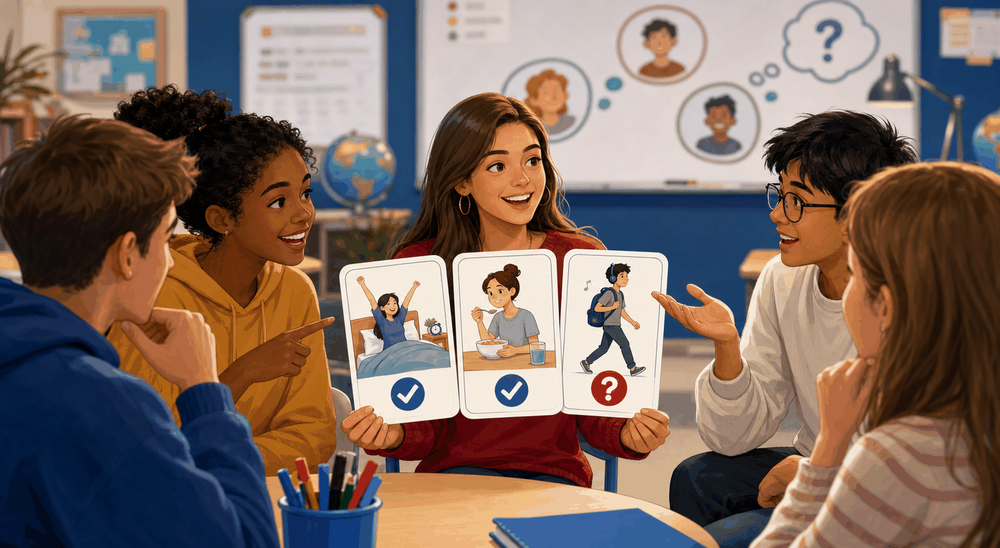

01
Unit 1: Registration Form Builder
Complete a registration form and generate a short classroom introduction.
Open activityBasic English Course 1
Practice Lab is now organized by unit so you can see how many games, readings, listenings, and workshops belong to each part of the course.
Practice dashboard
Open each folder to find the practice activities connected to that unit.
Personal information, greetings, introductions, spelling, and first conversations.
Complete a registration form and generate a short classroom introduction.
Open activity
Spin roles and questions to practice personal information exchanges.
Open activity
Read a simple conversation and identify greetings, names, ages, and polite expressions.
Open activity
Practice quick personal information conversations with rotating partners.
Open activityRole-play a business event, collect personal information, and report similarities.
Open activity
Listen to a first-day class story and answer comprehension questions.
Open activityClassroom objects, location, demonstratives, possession, and WH questions.

Practice classroom objects, locations, possession, and short speaking models.
Open activity
Complete 20 affirmative, negative, and question sentences with am, is, and are.
Open activitySpin a roulette, describe illustrated location cards, and reveal model sentences.
Open activityExchange objects, identify classroom items, confirm ownership, and present findings.
Open activityComplete a listening story and ten comprehension questions about classroom objects.
Open activity
Listen to a story connected to Units 1 and 2, then answer eight questions.
Open activityRead the second part of the listening story and develop eight comprehension questions.
Open activityDescriptions, family, third person, likes, and talking about other people.

Spin student and character roulettes, ask yes/no questions, and describe people.
Open activity
Reveal suspect cards, ask yes/no questions, and describe physical traits.
Open activitySurvey classmates, research a famous person, and perform a studio presentation.
Open activity
Practice family descriptions and third-person structures.
Open activity
Create a family photo gallery card and answer peer questions.
Open activityListen to a favorite-people story and answer comprehension questions.
Open activityListen to a family-photo conversation with favorite people, then answer ten questions.
Open activityRoutines, frequency words, weekly habits, and daily actions.

Practice daily routines, frequency words, and healthy habits.
Open activity
Complete simple present, frequency, and time-expression sentences.
Open activityBuild timelines, compare weekly routines, and present common habits.
Open activityCreate and perform a four-scene routine comic for a character.
Open activityListen to a routine story and answer comprehension questions.
Open activityListen to a classroom conversation and answer ten multiple-choice questions.
Open activity
Say three routine sentences, ask follow-up questions, and guess the lie.
Open activityWatch a weekly-routine conversation and answer ten thoughtful multiple-choice questions.
Open activityActivities, likes, frequency, polls, interviews, and after-class plans.

Practice free-time activities, frequency, and after-class language.
Open activityCollect class data about indoor and outdoor activities and discuss popularity.
Open activityRun a TV habits survey and perform an interview show with class data.
Open activityListen to a free-time story and answer comprehension questions.
Open activityPlaces, there is/there are, city maps, recommendations, and descriptions.

Design a neighborhood map, describe routines, and write a short blog entry.
Open activityCreate a city map, recommend places, and role-play a tourist desk.
Open activityListen to a neighborhood story and answer comprehension questions.
Open activity